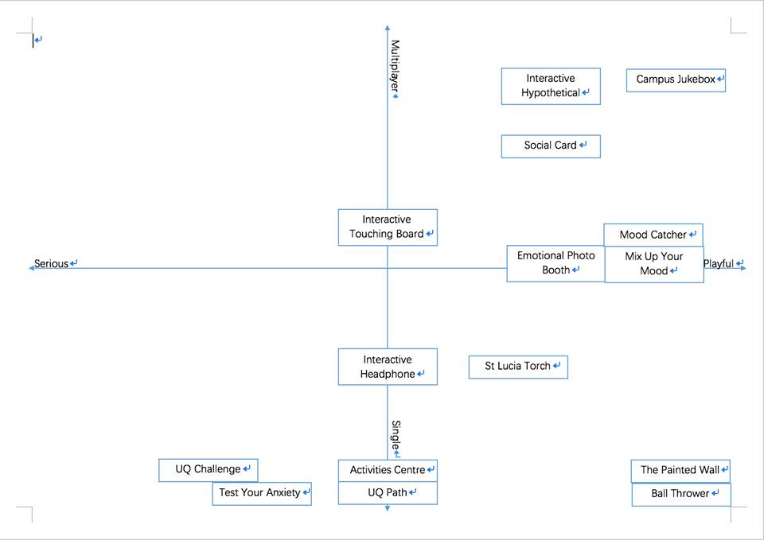
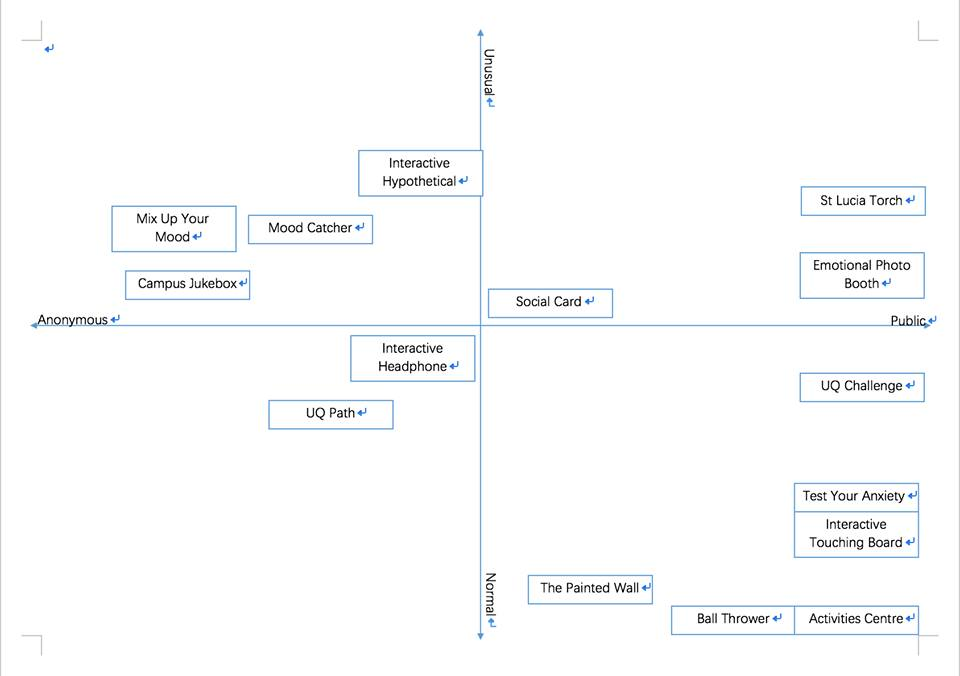
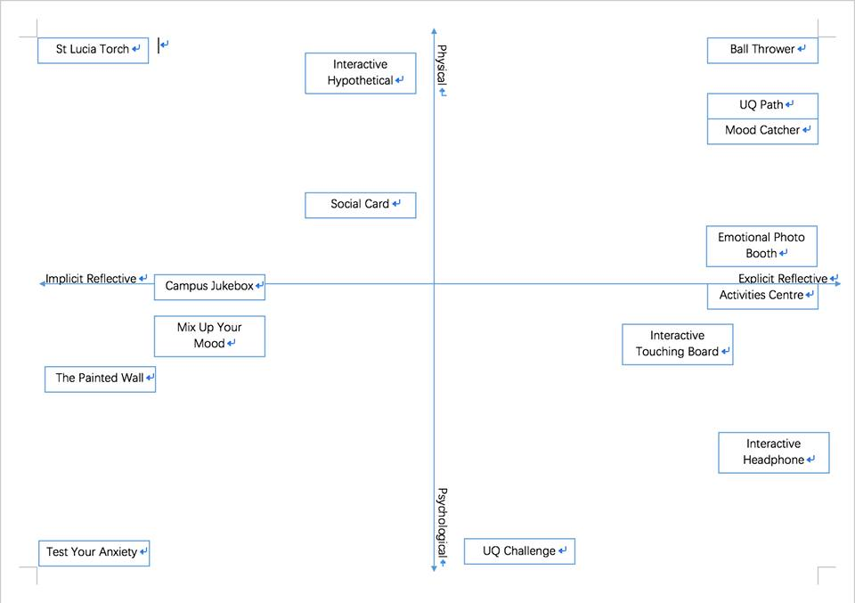

Mix Up Your Mood
Project Summary
The project described in this document was designed and created as part of UQ’s Design Thinking (DECO1100) course. The project required us to work in small groups to develop an interactive system for UQ’s St Lucia campus that could engage campus visitors’ interest concerning some intangible aspect of the campus and its people. Specifically, the core feature of our product was the capacity to measure a particular intangible aspect of the campus from interactions with its users while at the same time returning collected information of this intangible feature back in an engaging, interactive and thought- provoking manner. Additional requirements of our product that helped to guide our design process and concept development was that it needed to be multi-user, be a good product, be possible, employ interaction design principals, be targeted and specific, be self-sufficient and self-explanatory, be original and be physical.
Research
The research conducted throughout the process of designing our project. The initial and principal objective of our research was to create a solid foundation of knowledge regarding the values and interests of people at the UQ St Lucia campus as they may relate to particular intangible features of the campus. We believe this research provided an important base understanding in which notable themes and design insights and directions emerged. Accordingly we present our research below grouped according to the main themes that emerged and the insights and design directions we obtained from them. Our understanding gained from our research proved very useful to us later in the design process as it helped us conceptualize more relevant and interesting project designs than we think would have otherwise been possible. An important goal of our research was to utilise a wide scope of research methodologies from which we could hopefully yield useful and relevant data that we could explore and exploit to develop well- informed design directions and insights. Specifically, the principal research methodologies we conducted includes: open-ended interviews, observations, literature reviews, surveys questionnaires, discussions and concept map exercises within our group, as well as discussions with others taking the DECO1100 course.
Concept Maps
In the following section we present an analysis of our collection of the concepts provided in this document’s Concept Portfolio using 2x2 concept maps. To explain this process, for each concept map we identified different spectrum of qualities that our concepts may have and plotted our concepts along the graph. These concept maps proved instrumental in our appreciation of the design space we had and had not investigated into.
Multiplayer/Single-player Serious/Playful

Public/Anonymous Usual/Normal

Physical/Psychological Implicit/Explicit

Concept Description
The product suits all individuals regardless of musical ability. The technology involved includes a protruding panel with a series of buttons that are grouped according to different components of a song. These component categories are “chords [melody]”, “instrument”, “rhythm”. The “song” is a loop of one or two measures that will repeat approximately every four seconds. When buttons are pressed that choice will be added to the loop and be played from a speaker – users can then listen to the sound as the song loops. A side crank on the side of the panel allows users to crank to change the bpm. An electronic display above the panel will be user's with data via a graphic of a dancer whose face will be swapped with the user's or a partner's face – to represent the mood of their song. The display will prompt users to match their own or a friend's mood via creating music. The mood of the song will be calculated via mood values set to different choices on the panel where appropriate. To give a reflection of the campus's mood as a whole, the average and most common moods values recorded can be made into a song and video that can be played on default when no users are interacting with it. Created songs will be available to be shared on social media or downloaded to USB. The location of the display would best suit a green area on campus where it is relatively quiet where users are able to hear and experiment with the music at a relaxed pace.
Kickstarter Video
Installation
Introduction
A student walked past our project and was curious about our prototype. He asked what our prototype was exactly and we explained to him our product and asked if we could ask some questions about the design to which he agreed. Leader is trying to explain our prototype.
Shooting Video
Our video editor nancy is thinking about which angle can capture the best view of the product and how does the script can link together and clarify the product in video more specific and clearly.
Product
Finally, the installaton is done.
Bodystorming Video
Discussion